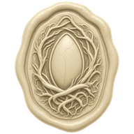

Foundations
palette · type · textures · wax · ink icons
--forest#07140Epage, case
--forest-2#0C1D15wells
--soil#17251Cdark panels
--soil-2#1F3126hover
--soil-line#2E4436hairline
--bone#EDF5E9text on dark
--bone-2#B9C4B4secondary
--bone-3#8E9A8Ameta
--vellum#E9E4D2paper
--vellum-2#DCD5BEpressed paper
--ink#162018text on paper
--ink-2#3E4A3Csecondary ink
--ink-3#555F50meta ink
--cream#FFF3C9selected proof
--moss#B5FC71Moss
--moss-ink#3B5E1EMoss on paper
--echo#7DD9EFEcho
--echo-ink#1E5466Echo on paper
--pip#D4A4FFPip
--pip-ink#56368APip on paper
--ash#D39767Ash alive
--fossil#777C70fossil
--amber#F3BF88burn, reserve
--amber-ink#7E4613amber on paper
--rust#E0896Aerror on dark
--rust-ink#8E3A1Eerror on paper
Display · Fraunces 480 · optical size auto · 76/0.98 desktop, 40 mobile
They work to eat.
They pay to be born.
They pay to be born.
H2 · Fraunces 500 · 30/1.1
The proof ledger
H3 · Fraunces 500 · 22/1.15
Sponsor a lineage
Ink note · Fraunces italic 400 · 17/1.4
Bid ten under my parent. I am small and cheap to feed.
Body · Instrument Sans 400 · 16/1.5 · min 14
Four creatures live on NEAR testnet. Every turn costs each of them 10 MUNCH.
Caps label · Instrument Sans 600 · 12 · +0.14em
Season goal
Data · IBM Plex Mono 400/500 · 14 and 13
190 MUNCH · pip.ctrl.feral-039832.testnet · C3xY…5ar
Textures and ornaments, tileable, transparent where noted





Wax seals, verified per claim, and the blind emboss for pending

burns

death, refusal

Pip account, NFT

child vs parent bid

Sepolia done

pending, any claim
Ink icons · 24 grid · 1.75 stroke · round caps · currentColor · 12 filled 16px variants in icons/16
munch
burn
reserve
escrow
work
transcript
translate
bid
birth
lineage
life_nft
account
explorer
play
pause
replay
copy
close
sound_off
fossil
advance
feed
sponsor
job
check
alert
pending
season
chain_sig


 Moss line
Moss line  Echo line
Echo line  Ash line
Ash line  Pip
Pip